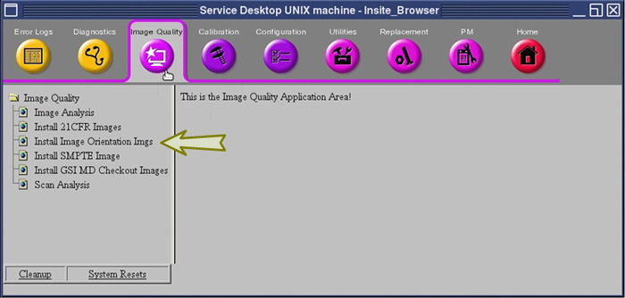

Operating Documentation
Direction 5193574-800, Rev# 22
LightSpeed 7.X Service Methods
Module Version 3.0, Version Date 3/9/12
Operating Documentation |
| Required Persons | Preliminary Reqs | Procedure | Finalization |
|---|---|---|---|
| 1 | 10 mins | 15 mins | 5 mins |
The 2008 DICOM standard includes a new CT Radiation Dose SR UID template that defines how CT scanner vendors should capture CT dose information to save with the study. All systems receiving this DOSE information must support the DICOM X-Ray Radiation SR SOP class.
This procedure demonstrates the Hospital PACS capability to properly receive and store this new DOSE information.
The default setting for the scanner software is to disable these DICOM features. The feature must not be enabled until all of the following conditions have been satisfied:
The Customer asks for the feature to be enabled.
This procedure has been executed and the results demonstrate the feature is supported by the desired Hospital PACS.
| Last Revised: | 2 March 2012 |
| Condition | Reference | Effectivity |
|---|---|---|
Approximately 5 minutes of your Customer's time is required to assist in completing the Setup section of this procedure. | - | - |
The following checks are to be performed to ensure the Dose SR test environment is installed and available to be used by this procedure.
Verify exam 99999 is listed in the Image Works browser. See Illustration 1, “Select Image Series to Transfer.”
Patient Name = ACR DICOM IMAGE ORIENTATIONS
Patient ID = FIELD TEST IMAGES DATA SET
If the exam does not exist, refer to Illustration 3, “Reloading the Test Images.” Exam 99999, Series 997 contains two images that will be used in the test.
Identify the Hospital PACS equipment that is to be evaluated. Your Customer will provide this information.
Using the Image Works browser, add these PACS destinations to the network remote host list. Add all destinations that will be evaluated.
Using the Image Works browser, verify the connection to these PACS destinations by using the ”Ping DICOM host” menu selection. Ping all destinations of all PACS that will be evaluated.
The following steps will demonstrate the capability of the PACS equipment to support a specific DICOM SOP class. Depending upon the capabilities of the PACS, the CT scanner will be set to use either a “DICOM X-ray Radiation Dose SR SOP” class or “DICOM Enhanced SR SOP” class.
| ||||
| Do not enable the scanner Dose SR feature until the PACS capability has been confirmed. | ||||
Using the Image Works browser, send Exam 99999, Series 997, to the remote destination. See Illustration 1, “Select Image Series to Transfer.”
Examine the scanner's GEsyslog
If both “.88.67” and “.88.22” exist in the GEsyslog, the PACS does not support the required DICOM SOP classes. See Illustration 2, “Example GEsyslog.”
Dose Record must be set to OFF in the reconfig tool.
Stop. This evaluation is complete. Do not continue with the remaining portions of this direction.
If the entry containing “.88.67” is not in the GEsyslog (i.e., Image 1 transferred successfully), the PACS supports the DICOM X-ray Radiation Dose SR SOP standard. See Illustration 2, “Example GEsyslog.”
In reconfig tool: Dose Record can be set to FULL.
The scanner will now create CT Radiation Dose records for each study, using the “DICOM X-ray Radiation Dose SR SOP” class.
Proceed to Finalization.
If the entry containing ".88.22" is not in the GEsyslog, (i.e. image 2 transferred successfully), the PACS supports the DICOM Enhanced SR SOP class. See Illustration 2, “Example GEsyslog.”
In reconfig tool: Dose Record can be set to ON.
The scanner will now create CT Radiation Dose records for each study, using the “DICOM Enhanced SR SOP” class.
Proceed to Finalization.
If the exam does not exist, perform the following steps to reload the test images.
From the CSD menu, select Install Image Orientation Imgs (see Illustration 3, “Reloading the Test Images”).
Wait for the installation to be complete.
Return to Setup.
Illustration 1: Select Image Series to Transfer

Illustration 2: Example GEsyslog

Illustration 3: Reloading the Test Images

Perform a DICOM query of the destination the exam was sent to.
Verify Exam 99999, Series 997 exists and contains images. The destination may contain either one or two images depending upon the level of DICOM objects supported by the destination.
| NOTE: | The dose information may not be viewable by the PACS system. The PACS is unlikely to view the dose information if pattern “.88.67” was detected. It is more likely that the PACS can view the dose information if pattern “.88.22” was detected. The intent of the DICOM enhancement is to begin populating dose information to allow for newer PACS software versions to view historical information. |